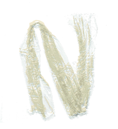

By the 1960s, the Australian company GLAD had created its own— though less clingy—version of plastic wrap from polyethylene. Saran Wrap too is now made from polyethylene after consumers grew concerned about the health impacts of wrapping their food in a plastic made with chloride.”
“PVC and PVDC differ by the slightly different chloride compositions in each molecule. Saran Wrap includes some vinyl chloride, often 13 percent, and both typically have toxic additives, said Bendell. The Food and Drug Administration regulates both, permitting less than a fraction of one percent of PVC and PVDC food wrap from migrating into food. At that exposure level, it's highly unlikely someone could be poisoned by their plastic wrap.
“If you have a dinner plate made out of PVC, is that posing a risk? Probably not,” says Rolf Halden, an environmental scientist at Arizona State University's Biodesign Institute. “But if we surround ourselves with PVC and phthalates, they can leach or ooze out of the products. That creates unwanted exposure.”
In order to make plastics softer, more flexible, and more transparent, they are often mixed with plasticizers, particularly for food packaging, says Ramani Narayan, a chemical engineer at Michigan State University. One common class of plasticizers is a group of molecules called phthalates—a category that contains carcinogens—although PVC plastic wrap doesn't contain them anymore. It does contain a plasticizer called DEHA, or diethylhexyl adipate, but its effects on human health are unclear.”